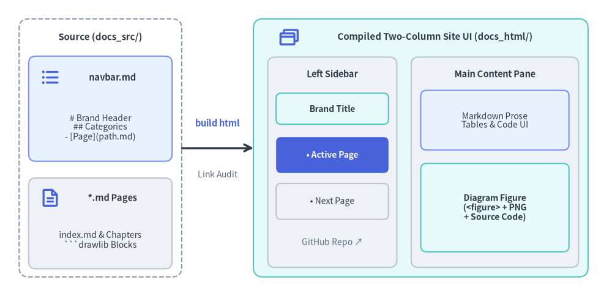
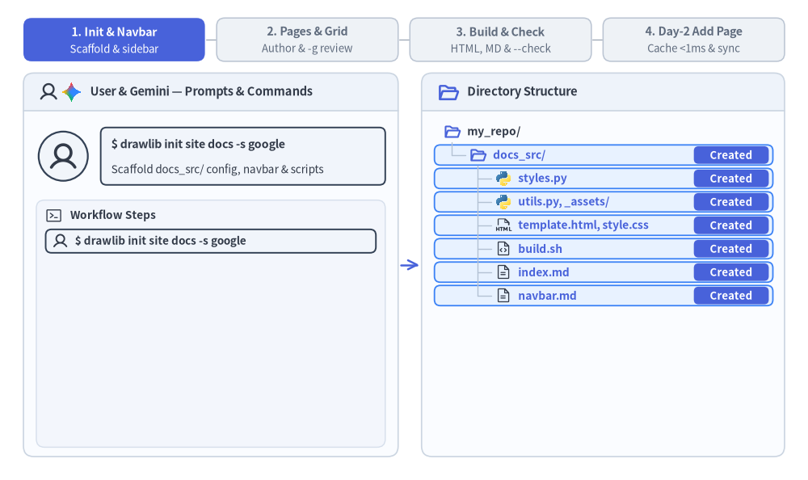

ドキュメントサイトプロジェクトガイド (drawlib init site)
site スターターテンプレートは、階層型のサイドバーナビゲーション、モバイル対応のレスポンシブレイアウト、シンタックスハイライト、および静的 HTML と GitHub 対応 Markdown へのデュアル出力を備えた、マルチページ構成の技術ドキュメントサイトを構築します。
Drawlib は docs_src/navbar.md と各 Markdown ページを、ビルド時の厳格なリンク検証を備えた 2 カラム構成のドキュメントポータルへコンパイルします。

Source Code
from drawlib.canvas import save, setup
from drawlib.icons import phosphor
from drawlib.lines import line
from drawlib.shapes import rectangle
from drawlib.styles import Styles
from drawlib.text import text
setup(width=128, height=62)
# Left: Source directory container
rectangle((21, 31), width=34, height=54, style=Styles.MutedDashed.patch(shape_r=2.0))
text((21, 54.2), "Source (docs_src/)", style=Styles.DarkBold.patch(text_size=10.8))
rectangle((21, 39.2), width=30, height=22, style=Styles.PrimaryNeutral.patch(shape_r=1.5))
phosphor.list_bullets((10.5, 45.8), width=4.4, style=Styles.PrimaryBold)
text((23.5, 45.8), "navbar.md", style=Styles.DarkBold.patch(text_size=10.5))
text((21, 35.2), "# Brand Header\n## Categories\n- [Page](path.md)", style=Styles.Dark.patch(text_size=10.0))
rectangle((21, 15.2), width=30, height=19, style=Styles.Neutral.patch(shape_r=1.5))
phosphor.file_text((10.5, 20.5), width=4.4, style=Styles.PrimaryBold)
text((23.5, 20.5), "*.md Pages", style=Styles.DarkBold.patch(text_size=10.5))
text((21, 11.8), "index.md & Chapters\n```drawlib Blocks", style=Styles.Dark.patch(text_size=10.0))
# Middle: Compiler step
line((38, 31), (53, 31), arrow_head="->", style=Styles.DarkBold)
text((45.5, 36.2), "build html", style=Styles.PrimaryBold.patch(text_size=10.5))
text((45.5, 25.5), "Link Audit", style=Styles.Muted.patch(text_size=10.0))
# Right: Compiled Two-Column Site UI (docs_html/)
rectangle((88, 31), width=70, height=54, style=Styles.SecondaryNeutral.patch(shape_r=2.0))
phosphor.browsers((60.5, 54.2), width=4.6, style=Styles.PrimaryBold)
text((91.0, 54.2), "Compiled Two-Column Site UI (docs_html/)", style=Styles.DarkBold.patch(text_size=10.8))
# Left Sticky Sidebar
rectangle((69.5, 28.0), width=27, height=44, style=Styles.Neutral.patch(shape_r=1.5))
text((69.5, 46.5), "Left Sidebar", style=Styles.DarkBold.patch(text_size=10.5))
rectangle(
(69.5, 39.2),
width=23.5,
height=6.5,
style=Styles.SecondaryNeutral.patch(shape_r=1.0),
text="Brand Title",
text_style=Styles.DarkBold.patch(text_size=10.0),
)
rectangle(
(69.5, 29.5),
width=23.5,
height=7.5,
style=Styles.PrimaryFlat.patch(shape_r=1.0),
text="• Active Page",
text_style=Styles.WhiteBold.patch(text_size=10.0),
)
rectangle(
(69.5, 19.8),
width=23.5,
height=7.5,
style=Styles.Neutral.patch(shape_r=1.0),
text="• Next Page",
text_style=Styles.Dark.patch(text_size=10.0),
)
text((69.5, 11.2), "GitHub Repo ↗", style=Styles.Muted.patch(text_size=10.0))
# Right Main Content Pane
rectangle((103.5, 28.0), width=35, height=44, style=Styles.Neutral.patch(shape_r=1.5))
text((103.5, 46.5), "Main Content Pane", style=Styles.DarkBold.patch(text_size=10.5))
rectangle(
(103.5, 36.8),
width=31,
height=12.5,
style=Styles.PrimaryNeutral.patch(shape_r=1.2),
text="Markdown Prose\nTables & Code UI",
text_style=Styles.Dark.patch(text_size=10.0),
)
rectangle(
(103.5, 18.5),
width=31,
height=18.5,
style=Styles.SecondaryNeutral.patch(shape_r=1.2),
text="Diagram Figure\n(<figure> + PNG\n+ Source Code)",
text_style=Styles.DarkBold.patch(text_size=10.0),
)
save()
1. エンドツーエンドのプロジェクトワークフロー
drawlib init site による初期スキャフォールディングと navbar.md サイドバーの構築から、-g グリッド検証、ヘッドレスのリンク検証（drawlib serve --check）、そして .drawlib/cache.db を活用した Day-2 の差分ページ追加までの流れを確認しましょう。

Source Code
from __future__ import annotations
from drawlib.anim import Animation
from drawlib.canvas import save, setup
from drawlib.icons import ai, code, devops, phosphor
from drawlib.lines import line
from drawlib.shapes import circle, rectangle
from drawlib.styles import Styles
from drawlib.text import text
W, H = 138.0, 82.0
setup(width=W, height=H)
anim = Animation(fps=10.0, loop=0)
PANE_BG = Styles.Neutral.patch(
shape_fill_color=(250, 252, 255),
shape_line_width=0,
shape_r=1.8,
)
PANE_HEADER_TOP = Styles.Neutral.patch(
shape_fill_color=(238, 243, 250),
shape_line_width=0,
shape_r=1.8,
)
PANE_HEADER_FLAT = Styles.Neutral.patch(
shape_fill_color=(238, 243, 250),
shape_line_width=0,
shape_r=0.0,
)
PANE_BORDER = Styles.Neutral.patch(
shape_fill_color=(0, 0, 0, 0),
shape_line_color=(203, 213, 225),
shape_line_width=1.2,
shape_r=1.8,
)
SUBPANEL_BG = Styles.Neutral.patch(
shape_fill_color=(243, 246, 252),
shape_line_color=(214, 223, 236),
shape_line_width=1.0,
shape_r=1.4,
)
ROW_ACTIVE = Styles.PrimaryNeutral.patch(
shape_fill_color=(232, 242, 255),
shape_line_color=(59, 130, 246),
shape_line_width=1.3,
shape_r=1.0,
)
ROW_USER = Styles.Neutral.patch(
shape_fill_color=(241, 245, 251),
shape_line_color=(51, 65, 85),
shape_line_width=1.4,
shape_r=1.0,
)
ROW_CACHED = Styles.PrimaryNeutral.patch(
shape_fill_color=(242, 247, 255),
shape_line_color=(147, 197, 253),
shape_line_width=1.0,
shape_r=1.0,
)
ROW_OUTPUT = Styles.SecondaryNeutral.patch(
shape_fill_color=(236, 250, 244),
shape_line_color=(34, 160, 107),
shape_line_width=1.2,
shape_r=1.0,
)
ROW_DONE = Styles.Neutral.patch(
shape_fill_color=(255, 255, 255),
shape_line_color=(218, 226, 238),
shape_line_width=1.0,
shape_r=1.0,
)
PART_ITEMS = [
("1. Init & Navbar", "Scaffold & sidebar"),
("2. Pages & Grid", "Author & -g review"),
("3. Build & Check", "HTML, MD & --check"),
("4. Day-2 Add Page", "Cache <1ms & sync"),
]
def draw_step_bar(active_part: int) -> None:
"""Draw top 4-pill progress bar aligned with both panes."""
pill_w = 31.0
pill_h = 7.4
gap = 2.0
start_x = 4.0 + pill_w / 2.0
cy = 75.2
for idx, (label, sublabel) in enumerate(PART_ITEMS, start=1):
cx = start_x + (idx - 1) * (pill_w + gap)
if idx > 1:
prev_cx = cx - (pill_w + gap)
line(
(prev_cx + pill_w / 2.0 + 0.2, cy),
(cx - pill_w / 2.0 - 0.2, cy),
style=Styles.PrimaryBold if idx <= active_part else Styles.MutedThin,
)
if idx == active_part:
st = Styles.PrimaryFlat.patch(shape_r=1.4)
tst = Styles.WhiteBold.patch(text_size=10.2)
sub_tst = Styles.White.patch(text_size=9.5)
elif idx < active_part:
st = Styles.PrimaryNeutral.patch(shape_r=1.4, shape_line_width=1.1)
tst = Styles.PrimaryBold.patch(text_size=10.2)
sub_tst = Styles.Primary.patch(text_size=9.5)
else:
st = Styles.Neutral.patch(shape_r=1.4, shape_line_width=1.1)
tst = Styles.MutedBold.patch(text_size=10.2)
sub_tst = Styles.Muted.patch(text_size=9.5)
rectangle((cx, cy), width=pill_w, height=pill_h, style=st)
text((cx, cy + 1.35), label, style=tst)
text((cx, cy - 1.55), sublabel, style=sub_tst)
def draw_pane_shell(cx: float, width: float) -> None:
"""Draw rounded pane container with top header bar."""
rectangle((cx, 36.75), width=width, height=65.5, style=PANE_BG)
rectangle((cx, 66.25), width=width, height=6.5, style=PANE_HEADER_TOP)
rectangle((cx, 64.60), width=width, height=3.2, style=PANE_HEADER_FLAT)
line(
(cx - width / 2.0, 63.0),
(cx + width / 2.0, 63.0),
style=Styles.Neutral.patch(line_color=(203, 213, 225), line_width=1.2),
)
rectangle((cx, 36.75), width=width, height=65.5, style=PANE_BORDER)
def draw_user_avatar(xy: tuple[float, float], radius: float = 4.2) -> None:
"""Draw circular User avatar badge."""
circle(
xy,
radius=radius,
style=Styles.Neutral.patch(
shape_fill_color=(241, 245, 250),
shape_line_color=(51, 65, 85),
shape_line_width=1.6,
),
)
phosphor.user(xy, width=radius * 1.25, style=Styles.DarkBold)
def draw_gemini_avatar(xy: tuple[float, float], radius: float = 4.2) -> None:
"""Draw circular Gemini avatar badge."""
circle(
xy,
radius=radius,
style=Styles.Neutral.patch(
shape_fill_color=(248, 250, 255),
shape_line_color=(59, 130, 246),
shape_line_width=1.5,
),
)
ai.gemini(xy, width=radius * 1.42, style=Styles.Neutral)
def draw_actor_row_icon(
actor_kind: str,
xy: tuple[float, float],
*,
muted: bool = False,
) -> None:
"""Draw mini User or Gemini icon at the start of an operation row."""
if actor_kind == "user":
phosphor.user(
xy,
width=2.8,
style=Styles.Muted if muted else Styles.DarkBold,
)
elif actor_kind == "user_git":
phosphor.user(
xy,
width=2.8,
style=Styles.Muted if muted else Styles.DarkBold,
)
devops.git((xy[0] + 2.8, xy[1]), width=2.6, style=Styles.Neutral)
else:
ai.gemini(xy, width=2.9, style=Styles.Neutral)
def draw_tree_icon(kind: str, xy: tuple[float, float], *, muted: bool = False) -> None:
"""Draw file or folder icon in the right-side directory tree."""
if kind == "folder_open":
phosphor.folder_open(
xy,
width=3.0,
style=Styles.Muted if muted else Styles.PrimaryBold,
)
elif kind == "folder_out":
phosphor.folder(
xy,
width=3.0,
style=Styles.Muted if muted else Styles.SecondaryBold,
)
elif kind == "py":
code.python(xy, width=2.8, style=Styles.Neutral)
elif kind == "html":
phosphor.file_html(
xy,
width=2.9,
style=Styles.Muted if muted else Styles.Dark,
)
elif kind == "md":
phosphor.file_text(
xy,
width=2.9,
style=Styles.Muted if muted else Styles.Dark,
)
elif kind == "sh":
phosphor.file_code(
xy,
width=2.9,
style=Styles.Muted if muted else Styles.Dark,
)
elif kind == "globe":
phosphor.globe(
xy,
width=2.9,
style=Styles.Muted if muted else Styles.PrimaryBold,
)
def draw_workspace(
*,
active_part: int,
actor: str,
actor_title: str,
actor_sub: str,
ops: list[tuple[str, str, str]],
show_day2_note: bool,
show_pages: bool,
show_deploy: bool,
show_outputs: bool,
row_states: dict[str, tuple[str, str]],
committed: bool,
pulse_arrow: bool,
) -> None:
"""Draw 2-pane split workspace for the site project workflow."""
draw_step_bar(active_part)
# Left Pane: User & Gemini — Prompts & Commands
draw_pane_shell(36.0, 64.0)
phosphor.user((8.3, 66.25), width=3.4, style=Styles.DarkBold)
ai.gemini((12.2, 66.25), width=3.7, style=Styles.Neutral)
text(
(15.4, 66.25),
"User & Gemini — Prompts & Commands",
style=Styles.DarkBold.patch(text_size=10.5, halign="left"),
)
if actor == "user":
draw_user_avatar((10.8, 55.3), radius=4.2)
bubble_st = ROW_USER
title_st = Styles.DarkBold.patch(text_size=10.2, halign="left")
else:
draw_gemini_avatar((10.8, 55.3), radius=4.2)
bubble_st = ROW_ACTIVE
title_st = Styles.PrimaryBold.patch(text_size=10.2, halign="left")
rectangle((41.5, 55.3), width=48.6, height=9.8, style=bubble_st)
text((19.0, 57.3), actor_title, style=title_st)
text(
(19.0, 53.0),
actor_sub,
style=Styles.Dark.patch(text_size=9.7, halign="left"),
)
rectangle((36.0, 26.7), width=59.6, height=42.2, style=SUBPANEL_BG)
phosphor.terminal_window((9.2, 45.2), width=3.1, style=Styles.Dark)
text(
(12.0, 45.2),
"Workflow Steps",
style=Styles.DarkBold.patch(text_size=9.8, halign="left"),
)
op_ys = [40.8, 36.2, 31.6, 27.0, 22.4, 17.8, 13.2, 8.6]
for (akind, label, state), oy in zip(ops, op_ys):
is_done = state == "done"
if state == "active_user":
ost = ROW_USER
otxt = Styles.DarkBold.patch(text_size=9.7, halign="left")
elif state == "active_gemini":
ost = ROW_ACTIVE
otxt = Styles.PrimaryBold.patch(text_size=9.7, halign="left")
else:
ost = ROW_DONE
otxt = Styles.Dark.patch(text_size=9.6, halign="left")
rectangle((36.0, oy), width=56.4, height=4.0, style=ost)
draw_actor_row_icon(akind, (10.3, oy), muted=is_done)
text((15.5 if akind == "user_git" else 12.8, oy), label, style=otxt)
if show_day2_note:
rectangle(
(36.0, 12.0),
width=55.6,
height=7.4,
style=Styles.Neutral.patch(
shape_fill_color=(255, 255, 255),
shape_line_color=(210, 220, 234),
shape_line_width=1.0,
shape_r=1.1,
),
)
text(
(36.0, 13.7),
"styles.py, utils.py & template.html stay untouched",
style=Styles.MutedBold.patch(text_size=9.6),
)
text(
(36.0, 10.1),
"Existing pages hit .drawlib/cache.db in <1ms",
style=Styles.Muted.patch(text_size=9.5),
)
line(
(68.4, 36.75),
(71.6, 36.75),
arrow_head="->",
style=(
Styles.PrimaryBold.patch(line_width=1.8)
if pulse_arrow
else Styles.MutedThin.patch(line_width=1.2)
),
)
# Right Pane: Directory Structure
draw_pane_shell(103.0, 62.0)
phosphor.folder_open((76.6, 66.25), width=3.8, style=Styles.PrimaryBold)
text(
(79.8, 66.25),
"Directory Structure",
style=Styles.DarkBold.patch(text_size=10.6, halign="left"),
)
if committed:
rectangle((123.2, 66.25), width=17.6, height=4.4, style=ROW_OUTPUT)
devops.git((116.8, 66.25), width=2.8, style=Styles.Neutral)
text(
(119.0, 66.25),
"Committed",
style=Styles.SecondaryBold.patch(text_size=9.5, halign="left"),
)
tree_rows: list[tuple[str, int, str, str, float]] = [
("root", 0, "folder_open", "my_repo/", 59.50),
("docs_src", 1, "folder_open", "docs_src/", 55.50),
("styles", 2, "py", "styles.py", 51.50),
("utils_assets", 2, "py", "utils.py, _assets/", 47.50),
("template", 2, "html", "template.html, style.css", 43.50),
("build_sh", 2, "sh", "build.sh", 39.50),
("index", 2, "md", "index.md", 35.50),
("navbar", 2, "md", "navbar.md", 31.50),
]
if show_pages:
tree_rows.extend(
[
("arch", 2, "md", "guide/arch.md", 27.50),
("ref", 2, "md", "api/ref.md", 23.50),
]
)
if show_deploy:
tree_rows.append(("deploy", 2, "md", "guide/deploy.md", 19.50))
if show_outputs:
tree_rows.extend(
[
("out_html", 1, "globe", "docs_html/", 13.80),
("out_md", 1, "folder_out", "docs_markdown/", 9.50),
]
)
for key, _lvl, _ik, _lbl, ry in tree_rows:
if key not in row_states:
continue
rstate, badge_txt = row_states[key]
if rstate in {"new", "active"}:
rst = ROW_ACTIVE
b_st = Styles.PrimaryFlat.patch(shape_r=0.8)
b_txt = Styles.WhiteBold.patch(text_size=9.5)
elif rstate == "cached":
rst = ROW_CACHED
b_st = Styles.PrimaryNeutral.patch(shape_r=0.8)
b_txt = Styles.PrimaryBold.patch(text_size=9.5)
elif rstate == "output":
rst = ROW_OUTPUT
b_st = Styles.SecondaryFlat.patch(shape_r=0.8)
b_txt = Styles.WhiteBold.patch(text_size=9.5)
else:
rst = None
b_st = None
b_txt = None
if rst is not None:
rectangle((103.1, ry), width=57.8, height=3.45, style=rst)
if badge_txt and b_st is not None and b_txt is not None:
bw = 15.6 if len(badge_txt) >= 10 else 12.8
bcx = 131.3 - bw / 2.0
rectangle(
(bcx, ry),
width=bw,
height=3.0,
style=b_st,
text=badge_txt,
text_style=b_txt,
)
guide_st = Styles.MutedThin.patch(line_color=(180, 194, 212), line_width=1.0)
last_lvl1_y = min(ry for _k, lvl, _ik, _l, ry in tree_rows if lvl == 1)
last_lvl2_y = min(ry for _k, lvl, _ik, _l, ry in tree_rows if lvl == 2)
line((77.2, 57.7), (77.2, last_lvl1_y), style=guide_st)
line((81.6, 53.7), (81.6, last_lvl2_y), style=guide_st)
for key, lvl, ik, lbl, ry in tree_rows:
rstate = row_states.get(key, ("normal", ""))[0]
is_muted = rstate == "muted"
if lvl == 0:
ix, lx = 77.2, 79.8
elif lvl == 1:
line((77.2, ry), (79.5, ry), style=guide_st)
ix, lx = 81.6, 84.2
else:
line((81.6, ry), (83.9, ry), style=guide_st)
ix, lx = 86.0, 88.5
draw_tree_icon(ik, (ix, ry), muted=is_muted)
if rstate in {"new", "active", "cached"}:
t_st = Styles.PrimaryBold.patch(text_size=9.9, halign="left")
elif rstate == "output":
t_st = Styles.SecondaryBold.patch(text_size=9.9, halign="left")
elif is_muted:
t_st = Styles.Muted.patch(text_size=9.7, halign="left")
elif lvl <= 1:
t_st = Styles.DarkBold.patch(text_size=9.9, halign="left")
else:
t_st = Styles.Dark.patch(text_size=9.8, halign="left")
text((lx, ry), lbl, style=t_st)
# Phase 1: 1. Init & Navbar (f0..f2)
with anim.frame(duration=3.1):
draw_workspace(
active_part=1,
actor="user",
actor_title="$ drawlib init site docs -s google",
actor_sub="Scaffold docs_src/ config, navbar & scripts",
ops=[
("user", "$ drawlib init site docs -s google", "active_user"),
],
show_day2_note=False,
show_pages=False,
show_deploy=False,
show_outputs=False,
row_states={
"docs_src": ("new", "Created"),
"styles": ("new", "Created"),
"utils_assets": ("new", "Created"),
"template": ("new", "Created"),
"build_sh": ("new", "Created"),
"index": ("new", "Created"),
"navbar": ("new", "Created"),
},
committed=False,
pulse_arrow=True,
)
with anim.frame(duration=3.1):
draw_workspace(
active_part=1,
actor="gemini",
actor_title="Gemini: Configure theme in styles.py",
actor_sub="Set Google brand palette, fonts & helpers",
ops=[
("user", "$ drawlib init site docs -s google", "done"),
("gemini", "Edit docs_src/styles.py, utils.py", "active_gemini"),
],
show_day2_note=False,
show_pages=False,
show_deploy=False,
show_outputs=False,
row_states={
"styles": ("active", "Updated"),
"utils_assets": ("active", "Updated"),
},
committed=False,
pulse_arrow=True,
)
with anim.frame(duration=3.3):
draw_workspace(
active_part=1,
actor="gemini",
actor_title="Gemini: Organize sidebar in navbar.md",
actor_sub="Define category headings & relative links",
ops=[
("user", "$ drawlib init site docs -s google", "done"),
("gemini", "Edit docs_src/styles.py, utils.py", "done"),
("gemini", "Edit docs_src/navbar.md (sidebar)", "active_gemini"),
],
show_day2_note=False,
show_pages=False,
show_deploy=False,
show_outputs=False,
row_states={
"navbar": ("active", "Updated"),
},
committed=False,
pulse_arrow=True,
)
# Phase 2: 2. Pages & Grid (f3..f5)
with anim.frame(duration=3.1):
draw_workspace(
active_part=2,
actor="gemini",
actor_title="Gemini: Author guide/arch.md & api/ref.md",
actor_sub="Write pages with Top Hero ```drawlib blocks",
ops=[
("user", "$ drawlib init site docs -s google", "done"),
("gemini", "Configure styles.py & navbar.md", "done"),
("gemini", "Author guide/arch.md & api/ref.md", "active_gemini"),
],
show_day2_note=False,
show_pages=True,
show_deploy=False,
show_outputs=False,
row_states={
"arch": ("new", "Created"),
"ref": ("new", "Created"),
},
committed=False,
pulse_arrow=True,
)
with anim.frame(duration=3.1):
draw_workspace(
active_part=2,
actor="gemini",
actor_title="$ drawlib show .../arch.md hero.png -g",
actor_sub="Export -o .drawlib/scratch/grid.png preview",
ops=[
("user", "$ drawlib init site docs -s google", "done"),
("gemini", "Configure styles.py & navbar.md", "done"),
("gemini", "Author guide/arch.md & api/ref.md", "done"),
("gemini", "$ drawlib show .../arch.md hero.png -g", "active_gemini"),
],
show_day2_note=False,
show_pages=True,
show_deploy=False,
show_outputs=False,
row_states={
"arch": ("active", "Grid -g"),
},
committed=False,
pulse_arrow=True,
)
with anim.frame(duration=3.3):
draw_workspace(
active_part=2,
actor="gemini",
actor_title="Gemini: Layout & 16px parity verified",
actor_sub="Zero clipping, clean margins & legible text",
ops=[
("user", "$ drawlib init site docs -s google", "done"),
("gemini", "Configure styles.py & navbar.md", "done"),
("gemini", "Author guide/arch.md & api/ref.md", "done"),
("gemini", "$ drawlib show .../arch.md hero.png -g", "done"),
("gemini", "Confirm clean layout & 16px parity", "active_gemini"),
],
show_day2_note=False,
show_pages=True,
show_deploy=False,
show_outputs=False,
row_states={
"index": ("output", "Verified"),
"arch": ("output", "Verified"),
"ref": ("output", "Verified"),
},
committed=False,
pulse_arrow=False,
)
# Phase 3: 3. Build & Check (f6..f8)
with anim.frame(duration=3.1):
draw_workspace(
active_part=3,
actor="gemini",
actor_title="$ ./docs_src/build.sh",
actor_sub="Compile docs_html/, docs_markdown/ & _assets/",
ops=[
("user", "$ drawlib init site docs -s google", "done"),
("gemini", "Configure styles.py & navbar.md", "done"),
("gemini", "Author & grid-verify site pages", "done"),
("gemini", "$ ./docs_src/build.sh", "active_gemini"),
],
show_day2_note=False,
show_pages=True,
show_deploy=False,
show_outputs=True,
row_states={
"build_sh": ("active", "Running"),
"utils_assets": ("output", "Synced"),
"out_html": ("output", "Output"),
"out_md": ("output", "Output"),
},
committed=False,
pulse_arrow=True,
)
with anim.frame(duration=3.1):
draw_workspace(
active_part=3,
actor="gemini",
actor_title="$ drawlib serve docs_html/ --check",
actor_sub="Headless audit verifies 0 broken links",
ops=[
("user", "$ drawlib init site docs -s google", "done"),
("gemini", "Configure styles.py & navbar.md", "done"),
("gemini", "Author & grid-verify site pages", "done"),
("gemini", "$ ./docs_src/build.sh", "done"),
("gemini", "$ drawlib serve docs_html/ --check", "active_gemini"),
],
show_day2_note=False,
show_pages=True,
show_deploy=False,
show_outputs=True,
row_states={
"out_html": ("output", "0 Broken"),
"out_md": ("output", "Checked"),
},
committed=False,
pulse_arrow=True,
)
with anim.frame(duration=3.3):
draw_workspace(
active_part=3,
actor="user",
actor_title='User: $ git commit -m "Launch docs site"',
actor_sub="Source Markdown & built portals versioned",
ops=[
("user", "$ drawlib init site docs -s google", "done"),
("gemini", "Configure styles.py & navbar.md", "done"),
("gemini", "Author & grid-verify site pages", "done"),
("gemini", "$ ./docs_src/build.sh", "done"),
("gemini", "$ drawlib serve docs_html/ --check", "done"),
("user_git", '$ git add . && git commit -m "Init site"', "active_user"),
],
show_day2_note=False,
show_pages=True,
show_deploy=False,
show_outputs=True,
row_states={},
committed=True,
pulse_arrow=False,
)
# Phase 4: 4. Day-2 Add Page (f9..f11)
with anim.frame(duration=3.1):
draw_workspace(
active_part=4,
actor="gemini",
actor_title='1 day later: Add guide/deploy.md',
actor_sub="Create new page & register link in navbar.md",
ops=[
("user", '1 day later: "Add deployment guide"', "done"),
("gemini", "Add guide/deploy.md & link navbar.md", "active_gemini"),
],
show_day2_note=True,
show_pages=True,
show_deploy=True,
show_outputs=True,
row_states={
"styles": ("muted", ""),
"utils_assets": ("muted", ""),
"template": ("muted", ""),
"navbar": ("active", "Modified"),
"deploy": ("new", "Created"),
"out_html": ("muted", ""),
"out_md": ("muted", ""),
},
committed=False,
pulse_arrow=True,
)
with anim.frame(duration=3.1):
draw_workspace(
active_part=4,
actor="gemini",
actor_title="$ ./docs_src/build.sh (Incremental)",
actor_sub="Unchanged pages cached; render only deploy.md",
ops=[
("user", '1 day later: "Add deployment guide"', "done"),
("gemini", "Add guide/deploy.md & link navbar.md", "done"),
("gemini", "$ ./docs_src/build.sh (SQLite cache)", "active_gemini"),
],
show_day2_note=True,
show_pages=True,
show_deploy=True,
show_outputs=True,
row_states={
"styles": ("muted", ""),
"utils_assets": ("muted", ""),
"template": ("muted", ""),
"index": ("cached", "Cached <1ms"),
"arch": ("cached", "Cached <1ms"),
"ref": ("cached", "Cached <1ms"),
"deploy": ("output", "Output"),
"out_html": ("output", "Output"),
"out_md": ("output", "Output"),
},
committed=False,
pulse_arrow=True,
)
with anim.frame(duration=3.3):
draw_workspace(
active_part=4,
actor="user",
actor_title="Re-audit (--check) & git commit",
actor_sub="0 broken links — updated site committed",
ops=[
("user", '1 day later: "Add deployment guide"', "done"),
("gemini", "Add guide/deploy.md & link navbar.md", "done"),
("gemini", "$ ./docs_src/build.sh (SQLite cache)", "done"),
("gemini", "$ drawlib serve docs_html/ --check", "done"),
("user_git", '$ git commit -m "Add deploy guide"', "active_user"),
],
show_day2_note=True,
show_pages=True,
show_deploy=True,
show_outputs=True,
row_states={
"out_html": ("output", "0 Broken"),
"out_md": ("output", "Checked"),
},
committed=True,
pulse_arrow=False,
)
save()
2. プロジェクトの初期化
drawlib init を使用してドキュメントサイトをスキャフォールディングします。
# Scaffold default 'docs_src/' in the current directory:
drawlib init site
# Or specify a custom target prefix (creates 'my_docs_src/', 'my_docs_html/', etc.):
drawlib init site my_docs --style google --lang en
3. ディレクトリ構成とアーキテクチャ
site プロジェクトでは、編集対象のソースファイル（docs_src/）と生成される公開用成果物を厳密に分離します。
docs_src/（信頼できる唯一の情報源）:index.md: ルートエントリドキュメント（index.html）としてレンダリングされるサイトのランディングページです。navbar.md: ブランドタイトル、折りたたみ可能なセクション、およびページリンクを宣言的に定義するサイドバーナビゲーションマニフェストです。- ネストされたセクションサブフォルダ (
guide/,api/,01_architecture/など):```drawlib図解ブロックを埋め込んだ階層構造の Markdown ページ群です。 _assets/: 出力ポータルへ再帰的にミラーリングされる静的メディアファイル（ロゴ、スクリーンショット、データファイルなど）です。styles.py&utils.py: プロジェクト全体のテーマパレット、言語ごとのタイポグラフィ既定値、および共有の Python 描画ヘルパーです。template.html&style.css: レスポンシブな 2 カラム HTML レイアウトシェルと 3 層構造の CSS スタイルシートです。build.sh,build_html.sh,build_markdown.sh,build_image.sh,serve.sh: モジュール化されたビルドスクリプトおよびローカルプレビュー用スクリプトです。
- 生成される出力先（直接編集しないでください）:
docs_html/: Web ホスティングやdrawlib serveにそのまま利用できるレスポンシブな静的 HTML ドキュメントポータルです。docs_markdown/: コンパイル済みの PNG / WebP 図表リンクを備えた GitHub 向けの Markdown ポータルです。docs_images/:build_image.sh実行時に単体ファイルとして抽出される図解画像群です。
4. サイドバーナビゲーション (navbar.md)
サイドバーのナビゲーション構造は、すべて docs_src/navbar.md によって制御されます。
# Drawlib Documentation
- [Home](index.md)
## Core Infrastructure
- [VPC Architecture](01_architecture/vpc.md)
- [Storage Tier](01_architecture/storage.md)
## Microservices
- [Authentication Gateway](02_services/auth.md)
- [Payment Service](02_services/payments.md)
## External Resources
- [GitHub Repository](https://github.com/example/repo)
記述ルール:
- ブランドヘッダー (
# Title): トップレベルの# 見出し 1がサイドバーヘッダーのブランドタイトルを設定します。 - カテゴリグループ (
## Category): 各## 見出し 2が折りたたみ可能なナビゲーションカテゴリセクションを定義します。 - 内部ドキュメントリンク: 相対パスは
docs_src/内に実在する Markdown ファイルを指している必要があります。 - 外部リンク:
http://またはhttps://で始まる URL は、外部リンクアイコン付きで自動的に新しいタブ（target="_blank"）で開きます。 - ビルド時の厳格な検証: リンク先のドキュメントが存在しない場合、ビルドは即座に中断され、該当ファイルと行番号を示すエラーが出力されます。
- アクティブページの自動追跡: 現在閲覧中のページは動的な相対パス解決によって自動的にハイライト表示（
.nav-item.active）されます。
5. 静的アセットの同期
docs_src/ 内に配置された静的アセット（カスタムロゴ、サンプルデータファイル、_assets/ 内の画像など）は、フォルダ階層を維持したまま docs_html/ および docs/ へ再帰的にミラーリングされます。
6. ビルドとローカルプレビュー
サイトのコンパイル
./docs_src/build_html.sh # Compile HTML site (docs_html/)
./docs_src/build_markdown.sh # Compile Markdown site (docs_markdown/ or docs/)
./docs_src/build_image.sh # Extract standalone images (docs_images/)
./docs_src/build.sh # Run all builds sequentially
ローカルプレビューサーバーとリンク監査
ローカル開発サーバーを起動してページをプレビューします。
uv run drawlib serve docs_html/
本番環境へデプロイする前に、ヘッドレスの事前リンク監査を実行します。
uv run drawlib serve docs_html/ --check
7. マルチエージェントによる並列サイト執筆
マルチページ構成の site プロジェクト（docs_src/**/*.md）は、並列 AI サブエージェントによる分担作業に自然にスケールします。
- フェーズ 1（親エージェントによる初期設定）: サブエージェントを起動する前に、
docs_src/をスキャフォールディング（drawlib init site）し、共有ファイル（styles.py、utils.py、_assets/、index.md、および完全なnavbar.mdサイドバーツリー）を確定させます。 - フェーズ 2（サブエージェントによる並列執筆）: 各サブエージェントに重複しないページまたはセクションディレクトリ（例:
01_architecture/*.mdと02_services/*.md）を割り当てます。各サブエージェントはstyles.py、utils.py、navbar.mdを読み取り専用として扱い、担当ページを執筆して一意なスクラッチファイル名（-o .drawlib/scratch/<page>_<block>_grid.png）で-gグリッドプレビューを実行します。 - フェーズ 3（統合ビルドとリンク監査）: すべてのサブエージェントが完了したら、親エージェントが
./docs_src/build.shを 1 回実行し、uv run drawlib serve docs_html/ --checkでサイト全体のリンク整合性を検証します。